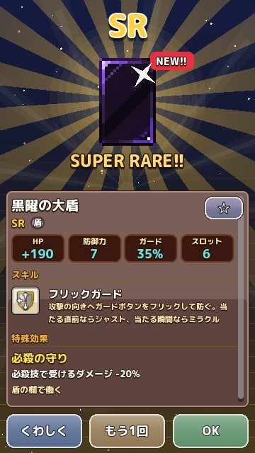

盾の選び方と DEF の見方
DEF・HP・効果の 3 つの数値の意味と、ガードの結果ごとの効き方、世界ごとの盾の選び方を数値つきで解説します。 更新：2026-11-23
盾が決める 3 つの数値
盾は 1 枚だけ装備できる、守りの要です。盾の詳しい画面には、次の 3 つが書かれています。
- DEF：ふつうのガードで、受けるダメージを何 % 減らすか。DEF 1 につき 5% 減り、いちばん多くて 95% までです。詳しい画面には「ふつうのガードでダメージ ○% カット」と、計算したあとの数がそのまま出ます
- HP：主人公の最大 HP に足される量。主人公のもとの HP は 100 で、そこに盾の HP が足されます。最大 HP を増やす武器の効果（ナイトハートなど）は、この合計にかかります
- 効果：特定の敵の攻撃をさらに減らす、ジャストガードの受付を広げる、倒れる攻撃を耐える、といった盾ごとの力。武器とちがい、盾の効果はいつでも働きます

たとえば最初に出会いやすい N の盾、バックラーは DEF 8・HP 160 なので、ふつうのガードで 40% カット、最大 HP は 100 + 160 = 260 です。同じ N のナイトシールドは DEF 5・HP 200 で、カットは 25% と低いかわりに最大 HP は 300 になります。どちらが強いかは、あなたのガードの腕前によって変わります。
ガードの結果と DEF の関係
DEF の数字を正しく読むには、ガードの結果ごとにダメージがどう決まるかを知っておく必要があります。
| 結果 | 受けるダメージ | ほかのごほうび |
|---|---|---|
| ガードしなかった | そのまま全部 | なし |
| ふつうのガード | 盾の DEF × 5% だけ減る | なし |
| ジャストガード | 90% 減る（DEF に関係なし） | ST が 2 回復 |
| ミラクルガード | 0 | HP が回復し、ST が全回復 |
ここから分かる大事なことは、DEF が効くのは「ふつうのガード」のときだけだということです。ジャストやミラクルが安定して出せる人ほど DEF の差は小さくなり、逆にふつうのガードが多い人ほど DEF の高い盾がありがたくなります。一方で HP は、ガードできなかった攻撃や連続攻撃のすべてに効くので、だれにとっても無駄になりません。タイミングのコツは ガードの極意 を見てください。

地上の盾のタイプと、おもな盾
地上の盾は、同じレア度の中で「ガード型（DEF が高く HP が低い）」「HP 型（DEF が低く HP が高い）」「まん中」に分けて作られています。そして、レア度が上の盾は、下の盾に DEF と HP の両方で負けないように決められています。進化した盾も、元の盾より両方とも上です。
| 盾（レア度） | DEF / HP | 効果 |
|---|---|---|
| バックラー（N） | 8 / 160 | なし。ガード型 |
| ナイトシールド（N） | 5 / 200 | 無属性の敵の攻撃をガードすると、さらに 40% カット |
| 鋼鉄の盾（R） | 8 / 280 | ふんばり：倒れるダメージを 5% の確率で HP 1 で耐える |
| メラメラの盾（R） | 11 / 220 | 炎の敵の攻撃をガードすると、さらに 40% カット |
| ファビットシールド（R） | 12 / 200 | ファビットの攻撃をガードすると、さらに 50% カット |
| ゴッドガード（SR） | 15 / 270 | ジャストガードの受付が 120% |
| ディバインヴォイス（SR） | 11 / 340 | ミラクルガードの HP の回復 150% |
| 悪魔盾ドレッディ（SR） | 0 / 360 | ジャストで 80%・ミラクルで 100% の確率で、攻撃した敵がスタン |
| イージスの盾（SR） | 15 / 320 | ガード・ジャストのとき 5% の確率でミラクルガードになる |
| イージスアイギス（SR+） | 16 / 400 | 同じ効果。地上でいちばん上の盾のひとつ |
属性のガードの盾（炎・水・風・光・闇）は R から R+ まで 5 種類そろっていて、エリアの敵の属性に合わせると、ふつうのガードでも大きく減らせます。DEF 11 のメラメラの盾で炎の敵をガードすると、まず 55% カット、さらに残りの 40% が減るので、受けるダメージはもとの 3 割以下になります。悪魔盾ドレッディは DEF が 0 なので、ふつうのガードでは 1 ダメージも減りません。ジャスト以上を出せる人のための「カウンター用」の盾です。
世界がかわると盾も変わる
地底・海底・天空では、敵の攻撃の守り方が変わります。地上はタップ、地底は向きに合わせてはじくフリック、海底は押したまま耐えて離すホールド、天空は左で受けてから向きに払うスワイプです。盾にはどのガードの盾かが決まっていて、その世界に合わない盾を付けて出発すると、ガードができないうえに、盾の HP・DEF・効果も入りません。出発前の画面に赤い字で「盾が地底に合わない」のような注意が出るので、見落とさないようにしましょう。
どの世界でも、はじめは N の盾から集め直しになります。地底の土塗れの盾、海底の潜水艇の窓、天空の羽毛の盾は、どれも DEF 1・HP 60 で、それぞれの世界の最初の練習でもらえる盾です。ここから先は、その世界の敵が落とす盾、ガチャの盾、そして町の店で直接買える盾で強くしていきます。店の盾の値段は、N が 3,000 コイン、R が 12,000 コイン、SR が 48,000 コインです。

それぞれの世界の盾には、その守り方ならではの効果がついています。
- 地底（フリック）：↑↑（上段）・←←（中段）・↓↓（下段）のどれかのダメージを減らす「天井の守り」「正面の守り」「足もとの守り」、攻撃の矢印が早く見える「予知」、向きをまちがえても半分防ぐ「受け流し」など。いちばん上は不壊の金剛壁（UR・DEF 12・HP 330）で、必殺技のダメージ −60% と、1 回の戦いで 1 度だけ倒れる攻撃を HP 1 で耐える力を持ちます
- 海底（ホールド）：途中で離したときのダメージを減らす「ねばり」、受けるダメージをいつも減らす「圧力隔壁」、離すときの向きの判定が広い「潮読み」など。海神盾ワダツミ（LR・DEF 14・HP 430）が上の段です
- 天空（スワイプ）：受付が長くなる「猶予」、向きが早く見える「先詠み」、ガードできなかった攻撃を減らす「受け身」、敵の特殊攻撃を出させない「避雷」「凪」「破魔」など。天照の神鏡（MR・DEF 14・HP 430）や不死鳥の盾フェニックス（MR・DEF 14・HP 440）が最上位です
それぞれの守り方は 地底編・海底編・天空編 の記事で解説しています。

盾の強化と進化
盾も鍛冶屋で強化と進化ができます。盾の強化は、+1 につき最大 HP が 10 増えます（DEF は増えません）。スロットが 9 マスある盾をすべて奇跡（+3）で埋めると、+27 で最大 HP は 270 も増えます。DEF を上げたいときは、進化で上のレア度の盾にするしかありません。
はじめから持っている古びた盾（R・DEF 1・HP 100）は、進化させると勇者の盾（R+・DEF 12・HP 280）、さらに英雄の盾（SR+・DEF 15・HP 350）へと大きく育ちます。ただし最初の進化には光竜のツメ 4 個・光竜の剛爪 2 個・スーパー強化鉄 5 個・20,000 コインが必要で、すぐには届きません。イージスの盾からイージスアイギスへの進化はさらに重く、ミラクルベル 2 個、5 属性の竜の剛爪を 2 個ずつ、ハイパー強化鉄 5 個、50,000 コインがいります。素材の集め方は 鍛冶屋の使い方 と コインと素材の集め方 へ。

腕前と時期で選ぶ盾
- ガードにまだ慣れていないとき：DEF の高いガード型の盾を選び、ふつうのガードでもしっかり減らします。地上ならバックラーから、属性のガードの盾へ
- 連続攻撃や必殺技で倒れるとき：HP 型の盾にして、最大 HP の厚みで耐えます。強化で HP を足すのも効きます
- ジャストやミラクルが安定してきたら：DEF よりも効果で選びます。ジャストの受付が広いゴッドガード、ミラクルの回復が増えるディバインヴォイス、カウンターのドレッディなど
盾はエリアの敵に合わせて付けかえるのが基本です。属性の盾や種族の盾は、合う敵の多い場所で使ってこそ強いので、武器と盾の組み合わせを 装備セット に登録しておくと、出発前の切りかえがすぐに終わります。
よくある失敗
- 地上の盾のまま地底に出た：ガードができず、盾の HP も入りません。最大 HP が 100 のまま戦うことになるので、赤い注意が出たら必ず付けかえましょう
- DEF だけを見て選んでいる：ジャストガードは DEF に関係なく 90% 減ります。ジャストが多い人は HP と効果を重く見たほうが強くなります
- 属性のガードの盾を、ちがう属性の場所で使っている：効果が働かないので、ただの R の盾になってしまいます
- ドレッディを初心者向けと思って付けた：DEF 0 なので、ふつうのガードでは何も減りません